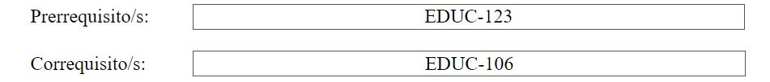

Al igual que con la creación de prontuarios, en la edición no se pueden alterar los datos relacionados con el código, el título, el tipo, la modalidad y el nivel del curso. Si se desea cambiar uno de estos aspectos se deben comunicar con la persona encargada de manejar la base de datos.
En el caso de no tener prerrequisitos y/o correquisitos se mostrará "N/A" en el/los encasillados correspondientes. A diferencia de la creación de prontuarios que no permite que el encasillado contenga valores si no aplica, en este caso el "N/A", en la edición se puede dejar el valor y no afecta el procesamiento de información. Del mismo modo, los encasillados se pueden dejar en blanco sino aplican. Por último, al igual que en la creación de prontuarios, los códigos de curso se separan por comas (,).
Con respecto a la duración, la cantidad de créditos, la descripción del curso, y la justificación, solo basta con seleccionar su contenido y modificarlo según corresponda. Recuerde que en la descripción y la justificación del curso el contenido se puede separar en párrafos de ser necesario.
A continuación, se explicará los distintos aspectos que se pueden modificar de los objetivos del curso. Primero, se pueden añadir objetivos presionando el botón de "Añadir Objetivo", y al igual que en la creación de prontuarios, se debe añadir la totalidad de nuevos objetivos antes de comenzar a llenar su descripción y alinearlos con los estándares correspondientes. Similarmente, se pueden eliminar la cantidad de objetivos, recordando que se eliminará el objetivo más reciente. Por ejemplo, si se posee diez (10) objetivos y se presiona el botón de "Remover Objetivo", el objetivo removido será el numero diez (10).
Segundo, la descripción de los objetivos ya existentes se puede editar. Del mismo modo, en la alineación de estándares, se puede añadir estándares o eliminar uno o varios de los existentes. Recordando que el estándar a añadir o remover debe de estar seleccionado en la caja que dice "Seleccione un estándar" que corresponda al objetivo que su alineamiento está siendo modificado.
En el caso del contenido temático, la descripción actual puede ser modificada. Además, se pueden añadir más encasillados para agregar contenido temático. Cabe destacar, que si se desean añadir más de un encasillado se debe añadir todos los encasillados correspondientes antes de empezar a llenar su descripción porque al agregar encasillados se borra el contenido de los que fueron añadidos a través del botón para dicho propósito. Por otro lado, para eliminar encasillados, basta con presionar el botón "Remover Contenido temático", teniendo en cuenta de que se eliminará el contenido más reciente. Por ejemplo, si se posee cinco (5) contenidos temáticos y se presiona el botón para remover, el contenido que será removido es el número cinco (5).
A continuación, la información de las estrategias de enseñanza se puede modificar de varias maneras. La primera siendo la cantidad de estrategias de enseñanza. Para esto, podemos presionar el botón de "Añadir estrategia" para añadir más encasillados. Por el otro lado, podemos presionar el botón de "Remover estrategia" con el cual removemos la estrategia más reciente. Es decir, si tenemos tres (3) estrategias y presionamos remover, la estrategia que será eliminada será el número tres (3). Segundo, el contenido de las estrategias actuales puede ser modificado. Por ejemplo, en las fotos mostradas a continuación podemos ver que si eliminamos el contenido de la primera estrategia se pueden ver más opciones que se encuentren en el sistema. Cabe destacar que se pueden escribir opciones que no se encuentren en la lista, el sistema se encargara de añadirlo y tenerlo disponible para uso futuro. Del mismo modo, si no se borra la totalidad del contenido del encasillado no se podrá mostrar todas las opciones disponibles, ya que según lo que esté escrito en el encasillado se busca en la lista las opciones que concuerden con lo escrito. Por ejemplo, si dejan escrito "Pre", el sistema solo mostrará las opciones que comiencen con "Pre". Por ende, si se desea más opciones se debe de eliminar todo el contenido del encasillado a modificar y luego seleccionar el triángulo para que así se muestren todas las opciones disponibles.
Para las estrategias de assessment se trabaja de forma similar a las estrategias de enseñanza que se describió anteriormente.
En lo que respecta a los libros de texto, las bibliografías, y los recursos en línea, los mismos se pueden modificar de dos (2) manera. La primera siendo en cantidad, para lo cual podemos presionar el botón de añadir que corresponda a la información que deseamos añadir encasillados. Del mismo modo, podemos presionar el botón de remover para eliminar el encasillado más reciente. Segundo, podemos modificar el contenido de los encasillados ya existentes. Por ejemplo, la versión de un libro, el enlace del recurso en línea, entre otros casos.
Por último, las reglas se modifican seleccionando o desmarcando los títulos de las reglas. De este modo, se altera que reglas aplican al curso. Por otro lado, si se desea modificar el contenido de la regla en sí, se debe ir a la lista de reglas existentes y seleccionar el título de la regla a modificar para así acceder a la página que nos permite modificar el título y la descripción de una regla.